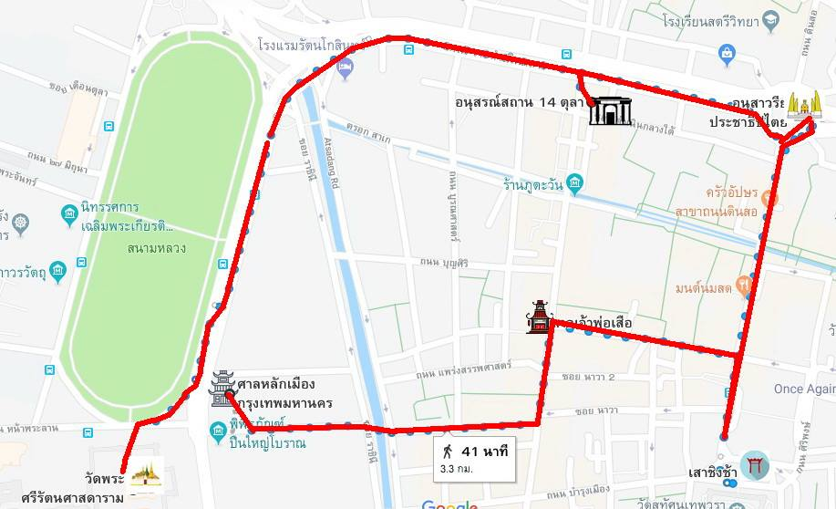

Itinerary
| Time | Location | |
|---|---|---|
| 8.00 | BTS National stadium | |
| 9.00 | Tiger god shrine | |
| 9.30 | The giant stadium | |
| 9.45 | Wat Suthat Thepwararam | |
| 10.45 | Bangkok city pillar shrine | |
| 11.00 | Wat Phra Kaew | |
| 12.00 | PadThai Thachang | |
| 13.00 | Maharaj pier | |
| 14.00 | Thammasat university | |
| 14.30 | National museum Bangkok |